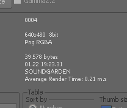
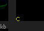

If you select a frame, then rrViewer shows information about the frame.
Including format, channels, bitdepth, resolution, file size and date, client that has rendered the frame and a Render time (Dependend on the renderer, the time is either counted for this exact frame or an averaged time of multiple frames)
It also includes information why a frame cannot be loaded/is broken.

The rrViewer can display the client name in the image thumbnail if either of the following was executed:
a) It is a local render out and the client created cache files for the rrViewer.
b) The clients have collected the frame number from the log file and posted them at the job, Log files, "Frames Rendered".
If you have enabled "Local Render Out" for a job, then the client creates small thumbnail caches while it copies the frame to the fileserver.
Otherwise, if the clients have not created cache files, these caches can also be created by the post-script "Sequence Check" or "Create Web Video".
You can disable the cache file creation for large sequences (default >750 frames) or by the type of render application. (by default "Compositing" is disabled).
Please change this setting in rrConfig.
If rrViewer loads a cache file, it shows a small yellow C in the lower edge of the frame.
If you double-click on a frame, a full resolution viewer pops up.
Note:
If you select a new frame in the thumbnail table, then the viewer is updated.
rrViewer is able to show different levels of frame Errors.
The error flags are either creates while the cache files are created or - if there are no caches - while rrViewer loads the frames.
A frame with an error gets a border of the following colors:
Level: |
Possible errors: |
Info |
|
Warning |
|
Error |
|
"Image to sequence difference":
If the post-script rrSequencecheck is executed, then it compares the color levels of the file with the average color levels of the whole sequence.
It also computes the total difference between the previous and the next image.
Name |
Extensions |
Comments |
Windows Bitmap |
.bmol |
|
Mental Ray ct |
.ct |
|
SMPTE DPX, Kodak Cineon |
.cin .dpx |
|
OpenExr |
.exr |
32bit Integer Object IDs are not supported |
Radiance Picture |
.hdr |
|
Maya IFF |
.iff |
|
Jpeg |
.jpg .jpeg |
|
Softimage Picture |
.pic |
|
.rla .rpf |
||
Silicon Graphics Image |
.sgi .rgb .lwi |
|
Targa |
.tga |
|
Tagged Image File |
.tif .tiff |
Tiled Tiffs are not supported. |
YUV4.1.1 Broadcast |
.yuv .pal .ntsc |